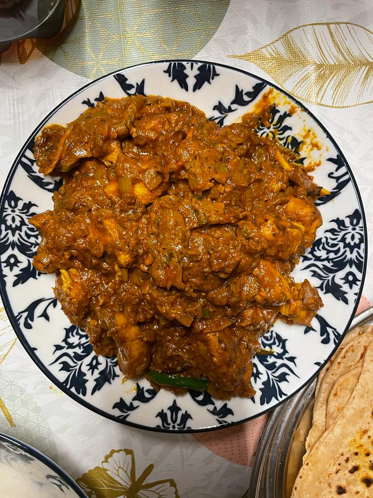

Hello Guys, In below pic you can see a very spicy homemade chicken masala and we will make this together.
Today we will concentrate on cooking this great dish from scratch, which is very quick and tasty
Mix garam masala, tandoori masala, curry, cumin, cardamom, cayenne, salt, and black pepper together in a small bowl to make spice mixture.
Place chicken in a large bowl and add 1/2 the spice mixture; turn to coat evenly.
Melt 1 tablespoon butter in a large skillet over medium heat. Add chicken; cook and stir until lightly browned, about 10 minutes. Remove from heat.
Melt remaining 2 tablespoons butter in a large saucepan over medium heat. Add onion; cook and stir until soft and translucent, about 5 minutes. Stir in remainder of the spice mixture, lemon juice, garlic, and ginger; cook and stir until combined, about 1 minute.
Stir tomato puree into onion mixture and cook, stirring frequently, about 2 minutes. Pour in half-and-half and yogurt. Reduce heat to low and simmer sauce, stirring frequently, about 10 minutes. Remove from heat.
Blend cashews in a blender until finely ground. Add sauce to the blender; puree until smooth.
Pour blended sauce over chicken in the skillet. Simmer until thickened, 10 to 15 minutes. Garnish with cilantro.